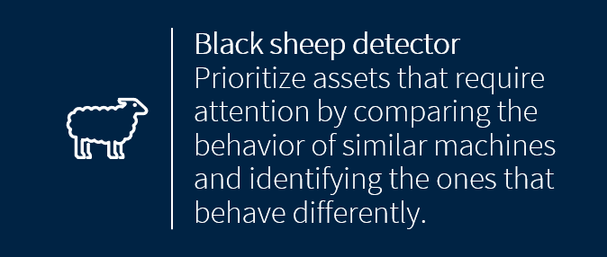
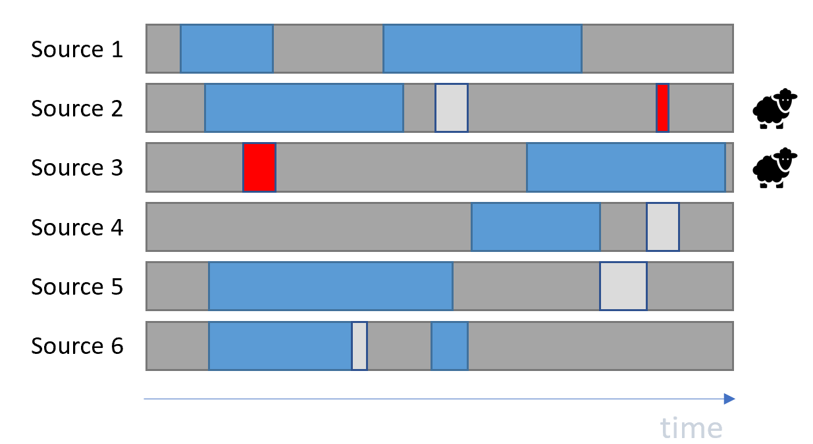

Population Based Anomaly Detection (BlackSheep)
What does BlackSheep do?
BlackSheep identifies atypical assets in a population of assets.
Use case for the algorithm
Identify assets which behave differently from the rest of the population.
How does BlackSheep work?
BlackSheep runs ModeId over a population of assets (sources). Based on all Modes identified over the population the most uncommon modes will be considered as atypical modes. Sources with the largest portion of uncommon modes are labeled as atypical sources – the Black Sheep of the population.
Illustrative Example
The figure below shows a population of 6 sources. In total 4 modes are identified over all sources. The “red” mode is the most uncommon mode, and the two sources which exhibit the uncommon mode are labeled as Black Sheep.
Using the algorithm via mvg
Upload vibration time series data for a population of sources.
Request an analysis for the population of sources.
Read the results (see below).
Analysis Parameters
The BlackSheep feature requires no parameters apart from the population list (sids) and feature (“BlackSheep”).
Structure of the Results
The results returned by the analysis call will be a dictionary containing the list of atypical assets.
{
'atypical_assets': ['source 2', 'source 3']
}
Notes
The algorithm is agnostic to the scale of the measurements, but the scale for all measurements needs to be consistent.
As data over a larger population can grow large, expect this feature to require longer processing times as compared to the other features.